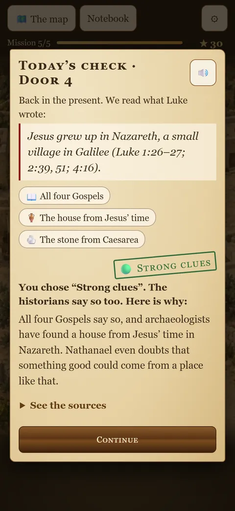

Ages 8 and up, into the teens · 1–24 December
An Advent calendar for older kids: investigate the Christmas story
The Journey with Luke is an online Advent calendar game for ages 8 and up, with a detective level that challenges kids well into their teens. They become the apprentice of Luke the physician, talk with people who were there, and solve one short case a day from the Christmas story in Luke’s Gospel, 1–24 December, in 5–15 minutes.
Door 1 is free, with no account. A code unlocks doors 2–24. Personal code: €24.99 / £19.99 / $24.99. Family code for the whole household: €49.99 / £39.99 / $49.99. A one-time purchase, no subscription.
- No in-app purchases
- No ads
- No tracking in the game
- No account

A Jesse Tree, or something else this year?
A Jesse Tree follows the long story that leads up to Jesus, often with a short reading and an ornament each day. The Journey with Luke takes another way: it stays close to the Christmas story in Luke, and lets the child look into it like a detective. You can also do both.
- A case, not only a reading. Each door is a short case. The child walks around painted places from Nazareth to Bethlehem, talks with people and gathers clues.
- The sources come with it. In the witness book the child sees the sources and decides what the clues actually point to.
- Today’s check. Each day the child judges how good the historians’ clues are for something Luke tells, and then sees why: Strong clues, Good clues or Scholars debate.
- Honest questions. Along the way they also meet questions that historians still discuss. That is part of looking into something honestly, and such questions need not shake anyone’s trust in the Bible.
Some of the doors
- 7 The emperor’s decree Luke 2:1–7. Luke names Emperor Augustus and Quirinius, people who can be checked in other sources.
- 10 The guest room and the manger Luke 2:6–7. What does the text really say, and what have we added ourselves in nativity plays?
- 13 Two accounts Matt 2:1–12. Matthew tells of the learned men from the East, Luke of the shepherds. Is that a contradiction, or could both have happened?
- 17 John at the Jordan Luke 3:1–22. Josephus, a Jewish historian who was not a Christian, also wrote about John the Baptist.
- 21 The copies Luke 1:1–4. We have very many old copies of the New Testament. How can comparing them make us confident about what was written?
- 23 A Messiah who dies? Luke 23:50–24:35; 1 Cor 15:3–8. Many expected a Messiah who would win, not die.
See all 24 doors on the front page.
What is the game built on?
- Retold from the Gospel of Luke in our own words, with references to chapter and verse. Luke himself writes that he looked carefully into everything and built on those who were eyewitnesses (Luke 1:1–4).
- Classic Christian faith. The Bible is treated as trustworthy, and as God’s word to people.
- What is invented is kept apart. Many of the people, and the conversations with Luke, are invented for the game, and the game says what is taken from the Bible and from other sources.
Talk together after each door
When a door is solved, an adult gets two questions to talk about around the table. The free activity sheets have a star task for those who want more, and for teenagers “Today’s check” and the star task are a good place to start.
No in-app purchases. No ads. No tracking in the game.
You pay once for the code, and then it is done. Inside the game there is no shop, no coins to buy and no offers that pop up. There is no account and no log-in, and progress is stored only on the device you play on.
Questions and answers
Is it a good Advent calendar for older kids?
Yes. It is made for ages 8 and up, with a detective level that challenges kids well into their teens.
Is it only for Christian families?
The game is made on a Christian foundation and takes the Bible seriously. At the same time it practises something everyone can use: asking good questions and testing what you hear. Everyone is welcome to take part.
Is it fun for grown-ups too?
Yes. It is just as much fun for grown-ups who play along.
What is the difference between a personal code and a family code?
A personal code (€24.99 / £19.99 / $24.99) is for one person. A family code (€49.99 / £39.99 / $49.99) is for the whole household, that is everyone who lives in the same home, and may be entered on all the devices you have at home.
Can more than one person use the same device?
Yes, but the game has no profiles, so people who share a device also share the progress. If each player is to have their own journey, they can use their own device or browser.
What if we buy in the middle of December?
Then the doors up to and including today’s date are open at once, and a new door opens each day through to Christmas Eve. You can catch up with the days when it suits you.
Try door 1 first
Door 1 is a whole door, just like the other 23: the first case, in the market in Caesarea, with no account and no email.
More: About The Journey with Luke · As a gift · For grandchildren · Homeschool Advent · Free activity sheets